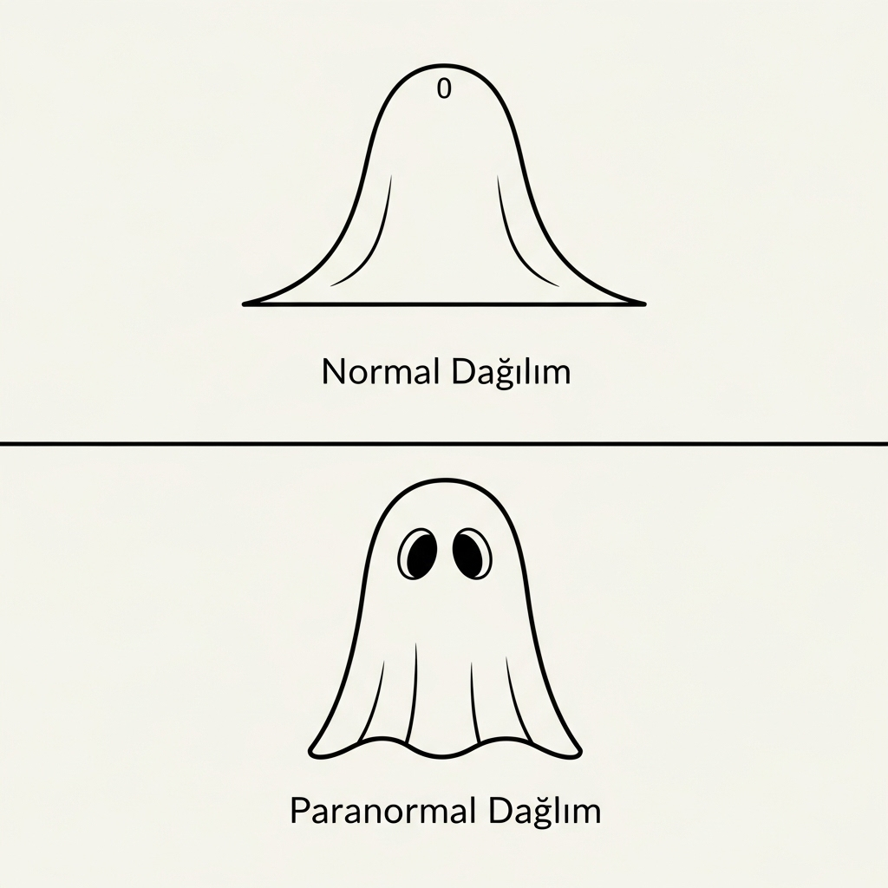

YZ'da daha iyi sonuçlara ulaşmak için yöntem önermek.
Yapay Zekâ ve Prompt Nedir?
Gemini Modellerini Tanıtımı
Atölye Çalışması
YZ ile daha verimli çalışma
Eğitim Süresi: 45 dk.
Soru & Cevap: 15 dk.
Yapay zekânın çalışma prensibi olasılık analizi hesaplamalarına dayanır.
Benim alanımda ve modern fizikte bilgi, en temel anlamıyla, belirsizliğin giderilmesidir. Bir madeni parayı havaya attığınızı düşünün. Yere düşmeden önce iki olası durum vardır: yazı veya tura. Bu bir belirsizlik durumudur. Paranın "tura" geldiğini gördüğünüz an, belirsizlik ortadan kalkar. İşte bu gözlemle edindiğiniz şey, bir "bit" bilgidir. Shannon entropisi, bu belirsizliği matematiksel olarak ölçer.
Çalışmalarım, bu tanımı bir adım öteye taşır. Bilgiyi sadece bir mesajlaşma unsuru olarak değil, fiziksel sistemlerin temel bir özelliği olarak görür. Bir sistemin (bir gaz molekülü, bir kuantum parçacığı, hatta bir kara delik) alabileceği olası konfigürasyonların sayısı, o sistemin entropisidir. Bilgi ise, o sistemin hangi spesifik konfigürasyonda olduğunu belirten şeydir.
Dolayısıyla, modern bakış açısıyla bilgi: Belirsizliği azaltan her şeydir. Fiziksel bir sistemin durumunu ayırt eden bir ölçüdür. Evrenin kendisinin temel bir yapı taşı olabilir. Yani bilgi, "şeyler hakkında" bir veri değil; fiziksel gerçekliğin kendisini oluşturan "şeyin" ta kendisi olabilir. Bizim aradığımız cevap bu.
Sessiz bir ihtimaldi her şeyden önce,
Belirsizliğin bulanık gölgesi.
Henüz “evet” ya da “hayır” dememiş,
Kainatın tutulmuş nefesi.
Sonra bir bakış dokunur boşluğa,
Bir hece düşer sonsuzluğun dilinden.
Olasılıklar ormanında bir yol seçilir,
Bir zerre ayrılır diğer her şeyden.
İşte bilgi, o anın ta kendisidir,
Farkın şiiridir, varlığın ilk sesi.
Belirsizliği yırtan bir şimşek,
Yokluğa “ben buradayım” demesi.
Taşa kazınan rüzgarın deseni,
Sayıların sessiz, ilahi raksı.
Bilgi, evrenin kendine yazdığı
Hem denklemdir, hem de bir aşk şarkısı.
Piyasaya girdiğimde, etrafım sonsuz bir pazar sisiyle kaplıydı. Ne bir arz ne de bir talep eğrisi görünüyordu. Her strateji, diğerinin aynısıydı; atacağım her yatırım adımı, sonsuz olasılıktan sadece biriydi ve hiçbiri diğerinden daha kârlı görünmüyordu. Bu, mutlak pazar belirsizliğiydi. Ekonominin omuz silkmesiydi.
Sonra bir sinyal aldım. Uzakta, veri akışının içinde belli belirsiz bir "tık". Bir anomali. Bir müşteri davranışı paterni.
O an her şey değişti. Artık sonsuz olasılık yoktu. Sadece iki tane vardı: bu sinyali takip etmek ya da etmemek. Ben, o veriye doğru bir yatırım yaptım. İkinci "tık" biraz daha belirgin bir trendi gösteriyordu. Bir yatırım daha. Üçüncü "tık" ile pazarın bir ihtiyacı artık netleşmişti.
Artık sisin içinde körlemesine para harcamıyordum. Bir iş modelim vardı. Attığım her adım, sayısız zarar senaryosunu eliyor, tek bir kârlı operasyonu gerçeğe dönüştürüyordu. Büyüdükçe, arkamda bıraktığım bilanço, pazarın sisine kazınmış bir başarı hikayesine dönüşüyordu: "Bu Pazara Girildi ve Değer Yaratıldı."
Nihayet sinyalin kaynağına ulaştım: düzenli olarak artan bir talep grafiği.
Ve anladım. Bilgi, o grafiğin kendisi değildi. Bilgi; o grafiği oluşturmak için, sonsuz pazar olasılıkları denizinden vazgeçtiğim diğer tüm başarısız iş fikirleriydi.
Bilgi, riskin azalmasının ve kârın artmasının hikayesidir.
Her prompt bir sözleşmedir
İstediğinizi tam olarak bilemeyebilirsiniz;
fakat ne istemediğinizi mutlak bilmelisiniz.
LLM’e verdiğiniz kimlik
Kim olarak konuşmalı?
Akademisyen • SEO Uzmanı • Finansal Danışman • Hikâye Anlatıcısı • İş Zekâsı Analisti
Modelin sahnedeki niyeti
Bu prompt ne istiyor?
Özetlemek • Anlatmak • Dönüştürmek • Kurgulamak • Sorular Üretmek • Hesaplamak
Modelin yapmaması gerekenler
'Ne istemiyor?'
Tekrar Yapma • Uzatma • Listeleme • Varsayımda bulunma • Amacın mantığını eklemelerle bozma • Amacın mantığını eksiltmelerle bozma
Model görevde kararsız kalır veya başarısız olursa
Olmazsa ne yapmalı?
Cevap veremiyorsan soru sor • Emin değilsen uyar • Nötr kal • Genel bir özet sun
Modelin cevabını nasıl daha iyi hale getirebilirsin?
Tekrar sor, daralt, genişlet, başka bakış açısı iste.
Bunu daha kısa yap • Bana iki farklı versiyon ver • Alternatif bir üslup dene • Daha teknik bir dil kullan • %80 Teknik %20 Dostça bir dil kullan
Ayırt edebilen (Discriminative) modeller üretmekten ziyade sınıflamak, etiketlemek ve karar vermek için kullanılır.
Üretken (Generative) modeller, yani "üretici" yapay zekâlar, tamamen yeni içerik üretmek için eğitilir. Örneğin bir prompt verirsiniz, size sıfırdan metin, resim, kod veya müzik üretir.
Gemini 1.x, Google’ın Bard sonrası çıkardığı ilk nesil büyük dil modelleri serisidir. GPT-4 gibi çok amaçlı çalışan bu modeller; metin yazmak, özetlemek, soru cevaplamak, kod üretmek gibi her işi belli bir seviye kaliteyle yapabilecek şekilde tasarlandı. Bu seri, Google’ın önceki PaLM ve Bard tabanlı modellerine göre daha gelişmiş bir anlayış ve bağlam yönetimi sunarak, Gemini markasını dünyaya duyuran ilk versiyon oldu.
Gemini 2.x, daha yeni ve daha yetenekli bir nesil. Bir önceki seriden farkı, daha uzun bağlamı takip edebilmesi, yani bir konuşmanın ya da metnin daha derin ilişkilerini anlayabilmesi. Ayrıca multimodal (örneğin aynı anda hem metin hem görsel içeriği işleyebilme) kapasitesi daha gelişmiş. Kod anlama, yaratıcı yazı, akademik analiz gibi karmaşık görevlerde bariz daha iyi performans verir. Bu seri Google’ın şu anki amiral gemisi sayılır.
Google, Gemini markasını sadece genel konuşan bir dil modeli olarak bırakmayıp onu farklı medya ve ihtiyaçlar için özel varyantlarla çeşitlendirmiştir.
Veo 2, Veo 3 gibi modeller Gemini altyapısının video üretmeye odaklanmış varyantlarıdır. Kullanıcılar bir metin tarifi verir (“çam ormanında yürüyen geyik” gibi) ve Veo bu tarife uygun kısa videolar oluşturur. Yani Text-to-Video.
Imagen serisi: Gemini ekosistemiyle entegre çalışan Text-to-Image modelleri kapsar. Yazdığınız cümleyi gerçekçi ya da sanatsal görsellere dönüştürebilmektedir.
Bu sayede Gemini ailesi artık sadece sohbet eden bir yapay zeka değil; video çeken, resim çizen, metin okuyan ve veri analiz eden tam bir multimodal üretim platformuna dönüşmüş durumdadır.
Gemini Pro, Google'ın tam teşekküllü, genel amaçlı LLM (Large Language Model)'idir.
GPT-4 gibi her şeyi yapabilen çok geniş bir model • Kompleks reasoning, uzun içerik üretimi, kod yazımı, multi-turn diyaloğu çok iyi yönetir • API ve Bard üzerinden sunulan varsayılan "güçlü" model genelde budur • Enterprise tekliflerde de "Pro" motoru baz alınır
Gemini Flash, Pro modelin daha hafif, daha hızlı, ama biraz daha "yüzeysel" versiyonudur.
Cevapları daha kısa, doğrudan ve hızlı üretir • Özellikle düşük latency gereken chatbot, müşteri hizmetleri, hızlı Q&A gibi işlerde öne çıkar • Daha ucuz inference maliyetleri için tercih edilir • Samimi tabirle: "Pro'nun turbo hafif paketi" gibi
Gemini Nano, daha da küçük, çoğu zaman mobil cihazlarda ya da edge compute'da kullanılacak kadar kompakt bir modeldir.
Genelde telefonda lokal çalışabilen ya da daha basit görevler için optimize edilmiş sürümdür • Google Pixel telefonlarda bazı Gemini özelliklerinin Nano varyantları çalışır • API'de doğrudan sunulmaz ama Google ekosistemi içinde lightweight inference için geçer
| Model | Ne için? | Güç | Hız | Maliyet |
|---|---|---|---|---|
| Pro | Her şey (düşün, yaz, çöz) | 🔥🔥🔥 | 🚶 | 💸💸💸 |
| Flash | Hızlı cevap, basit görev | 🔥🔥 | 🚀 | 💸 |
| Nano | Cihaz üstü, temel iş | 🔥 | 🚀🚀 | 💰 |